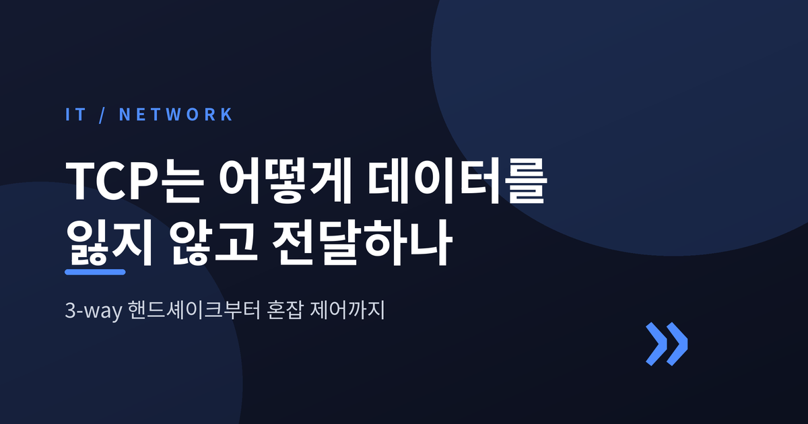
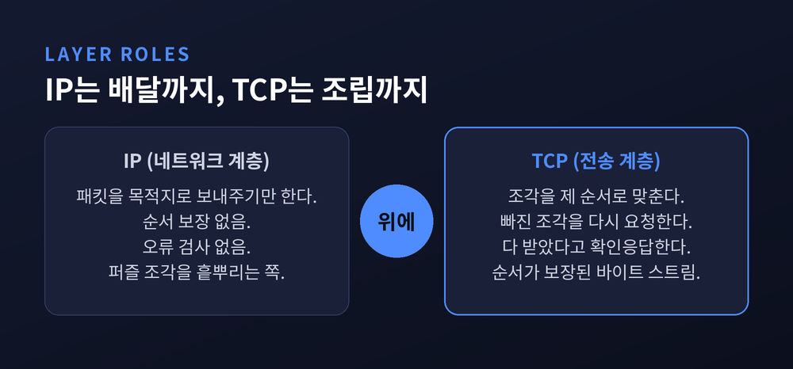
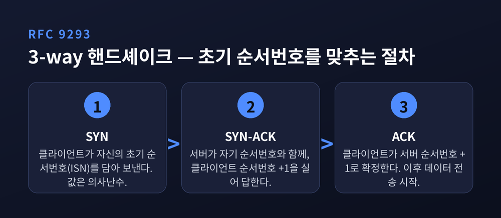
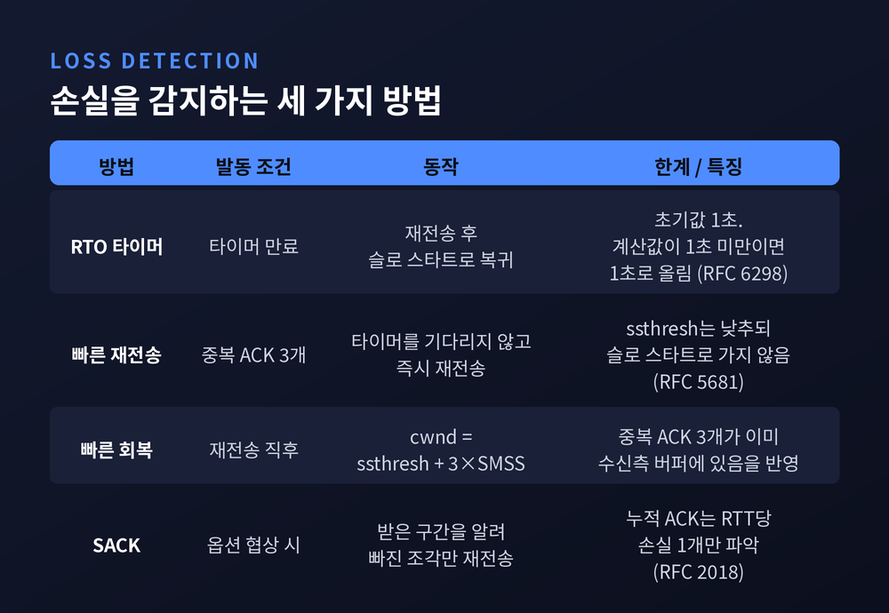
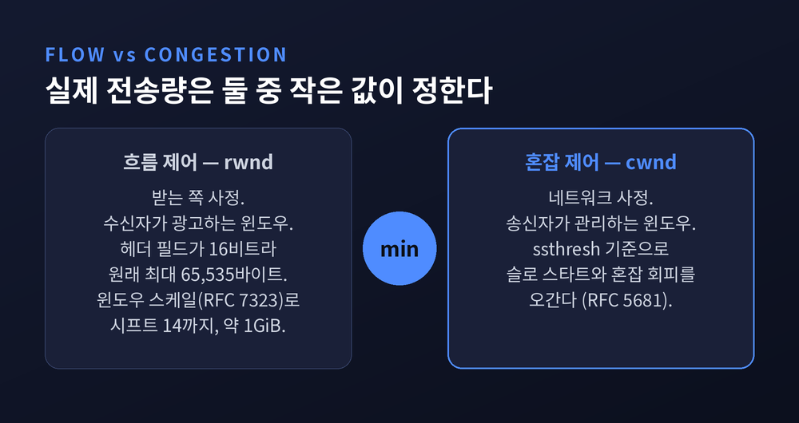
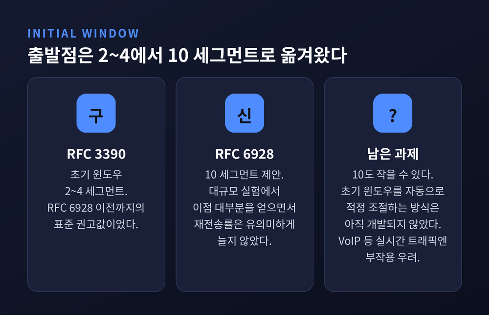

이번 글에서는 TCP가 데이터를 잃지 않고 전달하는 원리를 정리해 보겠습니다.
먼저 결론부터 세 줄로 말씀드립니다. TCP의 신뢰성은 네트워크가 패킷을 잃지 않게 만드는 데서 오지 않습니다. 잃어버릴 것을 전제하고, 무엇이 사라졌는지 감지해 다시 보내는 데서 옵니다. 3-way 핸드셰이크는 그 감지를 가능하게 하는 번호 체계를 맞추는 절차이고, 혼잡 제어는 그 재전송이 상황을 더 나쁘게 만들지 않도록 속도를 조절하는 장치입니다.
IP는 패킷을 목적지 쪽으로 보내주기만 합니다. 순서를 보장하지도, 오류를 검사하지도 않습니다. 그래서 그 위에 다른 프로토콜이 필요하고, 대개 그 자리를 TCP가 채웁니다.
클라우드플레어의 비유가 명료합니다. IP가 퍼즐 조각을 흩뿌려 보내는 쪽이라면, TCP는 반대편에서 조각을 제 순서로 맞추고, 빠진 조각을 다시 보내달라 청하고, 다 받았다고 알려주는 조립자입니다.
TCP가 응용 프로그램에 건네는 것은 하나입니다. 읽고 쓸 수 있는, 신뢰성 있고 순서가 보장된 바이트 스트림입니다. 큰 데이터를 스트림에 써 넣으면 작은 패킷으로 쪼개져 순서대로 나가고, 받는 쪽에서 다시 똑같은 스트림으로 합쳐집니다.

TCP 헤더의 순서번호 필드는 32비트입니다. 중요한 점은 번호를 매기는 단위입니다. TCP는 세그먼트가 아니라 바이트 단위로 번호를 매깁니다. 데이터의 각 바이트에 번호가 붙는 셈입니다.
순서번호는 보낸 바이트 수를 추적합니다. 확인응답번호는 상대에게 "다음에 받기를 기대하는 바이트 번호"를 알립니다. 이 두 숫자만으로 수신 측은 재정렬된 패킷과 중복 패킷을 판별해 냅니다.
훼손 여부는 체크섬이 봅니다. TCP 체크섬은 16비트이고, 계산 방식이 흥미롭습니다. TCP 헤더와 데이터뿐 아니라 IP 출발지·목적지 주소, 프로토콜 값 6, 세그먼트 길이까지 끌어와 16비트 1의 보수 합으로 계산합니다. 전송 계층이 네트워크 계층 정보를 빌려와 검증하는 구조입니다.
물론 완벽하지는 않습니다. 16비트 체크섬은 강력한 오류 검출 코드가 아니며, 이더넷 CRC와 TCP/IP 체크섬의 검출 한계를 지적하는 자료도 있습니다.
흔히 "연결을 맺는다"고 설명합니다만, RFC 9293의 서술은 조금 다릅니다. 연결이 성립되려면 두 TCP가 서로의 초기 순서번호에 동기화해야 하고, 그러기 위해 SYN 제어 비트와 초기 순서번호를 담은 세그먼트를 교환한다고 적혀 있습니다.
순서는 이렇습니다.
왜 하필 1을 더할까요. SYN 플래그 자체가 순서번호 하나를 소비하기 때문입니다.
초기 순서번호를 난수로 뽑는 이유도 짚어둘 만합니다. 예측 가능한 번호라면 제3자가 번호를 짐작해 세그먼트를 끼워넣을 수 있습니다. 무작위성은 이런 블라인드 인젝션 공격에 대한 방어 효과를 함께 냅니다.

첫째, 재전송 타이머(RTO)입니다. 확실하지만 느립니다.
RFC 6298에 따르면 송신자는 SRTT(평활화된 왕복시간)와 RTTVAR(왕복시간 편차) 두 값을 유지합니다. 공식은 RTO = SRTT + max(G, K×RTTVAR)이고, 평활화 계수는 alpha 1/8, beta 1/4을 씁니다.
눈에 띄는 것은 하한입니다. RTT를 한 번도 재지 못했다면 RTO를 1초로 잡고, 계산 결과가 1초 미만이면 1초로 올립니다. 요즘 네트워크 기준으로는 대단히 긴 시간입니다. 이유가 있습니다. 전통적으로 TCP 구현은 거친 클록으로 RTT를 재 왔고, 연구에 따르면 큰 RTO 최솟값이 TCP를 보수적으로 유지해 불필요한 재전송을 막는 데 필요하다고 봅니다.
둘째, 빠른 재전송입니다. 타이머를 기다리지 않습니다.
송신자가 중복 ACK 3개를 받으면 즉시 빠진 패킷을 다시 보냅니다. 그리고 ssthresh를 실무적으로 현재 윈도우의 절반 수준으로 낮춥니다. 다만 슬로 스타트로 되돌아가지는 않고 빠른 회복에 들어가, cwnd를 ssthresh + 3×SMSS로 잡습니다. 이미 세그먼트 세 개가 상대에게 도착해 버퍼에 있다는 사실을 반영한 값입니다.
논리가 우아합니다. 중복 ACK가 온다는 것은 길이 완전히 막힌 게 아니라 뚫려 있다는 뜻입니다. 패킷 하나가 네트워크에서 빠져나갔다는 신호이니, 침묵(타이머 만료)과 달리 급하게 물러설 이유가 없는 것입니다.
셋째, SACK입니다. 누적 확인응답의 한계를 메웁니다.
TCP의 기본 확인응답은 누적 방식입니다. 수신 윈도우의 왼쪽 끝이 아닌 세그먼트는 확인응답되지 않습니다. 그래서 송신자는 왕복시간 한 번당 손실 패킷 하나만 알아낼 수 있습니다.
한 윈도우 안에서 여러 패킷이 사라지면 문제가 커집니다. RFC 2018은 이를 처리량에 "재앙적"이라고 표현합니다. 송신자에게 남는 선택지가 둘뿐이기 때문입니다. 손실 하나당 왕복시간 한 번씩 기다리거나, 잘 받은 세그먼트까지 통째로 다시 보내거나.
SACK는 수신 측이 "내가 실제로 받은 구간은 여기까지"를 알려주게 합니다. 송신자는 빠진 조각만 골라 다시 보냅니다.

자주 섞이는 두 개념입니다. 나누어 보면 간단합니다.
흐름 제어는 받는 쪽 사정입니다. 수신자가 광고하는 윈도우 rwnd가 그 한계입니다. 원래 TCP 헤더의 윈도우 필드는 16비트라 최대 65,535바이트, 약 64KB에 묶여 있었습니다. 대역폭이 커진 오늘날엔 턱없이 좁습니다.
그래서 RFC 7323의 윈도우 스케일 옵션이 나왔습니다. 윈도우 정의를 30비트로 넓히고, 스케일 팩터의 지수만 TCP 옵션에 실어 보냅니다. 시프트 카운트 최댓값은 14이고, 이때 유효 윈도우는 65,535 × 2¹⁴ ≈ 1GiB까지 열립니다.
혼잡 제어는 네트워크 사정입니다. 송신자가 관리하는 cwnd가 그 한계입니다. 실제로 보낼 수 있는 양은 cwnd와 rwnd 중 작은 쪽이 결정합니다. 상대가 아무리 여유로워도 중간 경로가 좁으면 소용없습니다.

이름이 오해를 부릅니다. RFC 5681의 슬로 스타트는 ACK 하나당 cwnd를 최대 SMSS만큼 늘립니다. 왕복시간마다 대략 두 배가 됩니다. 지수 증가입니다. 느린 것은 속도가 아니라 출발점입니다.
어디까지 슬로 스타트를 쓸지는 ssthresh가 가릅니다. cwnd가 ssthresh보다 작으면 슬로 스타트, 크면 혼잡 회피입니다. 초기 ssthresh는 가능한 한 높게 잡도록 권고됩니다. 임의의 호스트 한계가 아니라 네트워크 상황이 전송률을 정하게 두려는 뜻입니다.
출발점 자체도 달라졌습니다. 예전엔 RFC 3390 기준으로 2~4 세그먼트에서 시작했습니다. 지금은 RFC 6928이 10 세그먼트를 제안합니다. 근거는 대규모 실험이었습니다. 10 세그먼트가 테스트한 서비스 대부분에서 이점을 내면서도 재전송률을 유의미하게 높이지 않았다는 것입니다.
RFC 6928은 자기 한계도 정직하게 적어두었습니다. 웹 객체 평균 크기가 계속 커지면 10 세그먼트도 작을 수 있는데, 초기 윈도우를 장기적으로 자동 조절하는 방식은 아직 개발되지 않았다고 밝힙니다. VoIP 같은 실시간 트래픽에 부작용이 있을 수 있다는 경고도 함께 있습니다.

혼잡 제어도 계속 바뀌었습니다.
CUBIC은 RFC 9438로 2023년 8월 표준화되었습니다. 이름 그대로 선형 증가 대신 3차 함수를 씁니다. 함수의 평평한 지점을 기억해둔 혼잡 윈도우 크기에 맞춰 둡니다. 그 지점까지는 오목하게 조심스럽게 다가가고, 지나서도 아무 일 없으면 볼록하게 과감히 뻗습니다. RFC 9438에 따르면 Linux, Windows, Apple 스택의 기본 알고리즘입니다.
BBR은 접근이 다릅니다. 구글이 2016년에 내놓았고, 손실을 혼잡 신호로 삼는 방식의 한계에서 출발합니다. BBR은 경로를 모델링해 두 값을 추정합니다. 병목 대역폭(BtlBw)과 왕복 전파 시간(RTprop)입니다. 손실 하나로 윈도우를 꺾지 않고, 이 모델에 근거해 전송 동작을 조정합니다.
대비가 선명합니다. BBR은 "병목 큐가 비는" 바람직한 사건을 중심으로 흐름을 동기화합니다. 반면 손실 기반 제어는 "큐가 차고 넘치는" 바람직하지 않은 사건을 중심으로 동기화되어, 지연과 손실을 오히려 증폭시킵니다.
BBR이 만능은 아닙니다. RTT 공정성 문제를 지적하고 개선을 제안하는 연구가 이어지고 있습니다.
TCP는 전이중이라 양방향 스트림이 독립적입니다. 그래서 닫을 때도 FIN/ACK 교환이 두 번, 통상 4-way로 이뤄집니다. FIN은 "더 보낼 데이터가 없다"는 신호입니다.
마지막에 남는 것이 TIME-WAIT입니다. 이 상태는 최대 세그먼트 수명(MSL)의 두 배, 즉 2MSL 동안 유지됩니다. 명세상 MSL은 RFC 793 때부터 RFC 9293까지 2분입니다만, 실제 구현에서는 30초나 1분을 쓰는 경우도 흔합니다.
굳이 기다리는 이유는 둘입니다. 마지막 ACK가 상대에게 닿지 못했을 경우를 대비하는 것이 하나. 이전 연결의 지연된 패킷이 같은 주소·포트 조합을 쓰는 새 소켓에 잘못 섞이는 것을 막는 것이 둘입니다.
서버에 TIME_WAIT 소켓이 잔뜩 쌓여 있다면, 고장이 아니라 규약을 지키는 중이라고 보시면 됩니다.
정리하면 이렇습니다.
TCP의 각 장치는 서로 다른 실패를 담당합니다. 순서번호는 뒤섞임을, 체크섬은 훼손을, 핸드셰이크는 시작점 불일치를, RTO와 빠른 재전송과 SACK는 손실을, 혼잡 제어는 과속을 맡습니다. 어느 하나 빠져도 "신뢰성"은 성립하지 않습니다.
"TCP는 네트워크를 믿지 않기 때문에 신뢰할 수 있습니다."
40년 넘게 이 프로토콜이 버티는 이유가 무엇이냐 물으신다면, 저는 이 정직함이라고 답하겠습니다. 잃을 것을 인정하고 설계한 쪽이, 잃지 않으리라 가정한 쪽보다 오래갑니다.